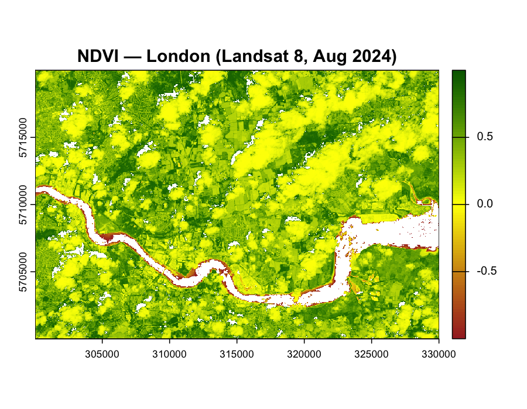

Week 3 Learning Diary: Corrections and Enhancements
Summary
This week unpacked what happens between a satellite recording raw electromagnetic energy and a researcher loading “ready-to-use” surface reflectance — a pipeline that most users never see but that fundamentally determines what their pixel values mean. The lecture framed this around a deceptively simple question: when you load a Landsat image, what are you actually looking at? The answer depends entirely on which product level you chose, and the differences are not cosmetic.
The starting point is the Digital Number (DN) — a dimensionless integer that encodes the detector’s response to incoming radiance, scaled and quantised for efficient storage and transmission. DN has no physical meaning: the same surface feature will produce different DN values depending on the sensor’s gain settings, the Sun-Earth distance on the acquisition date, and the solar elevation angle. Converting DN to spectral radiance (\(L_\lambda = Gain \times DN + Bias\), with coefficients from the metadata) gives a physically meaningful quantity — the power per unit area per steradian per wavelength reaching the sensor. But radiance still conflates the surface signal with atmospheric contamination and illumination geometry. The next step, Top of Atmosphere (TOA) reflectance, normalises for solar irradiance and Sun-Earth distance, removing illumination effects but leaving the atmosphere in place. Only surface reflectance (BOA) — obtained by modelling and removing atmospheric absorption and scattering — gives a value that is a property of the surface itself, comparable across dates, sensors, and locations.
Atmospheric correction is where most of the analytical complexity lies. The atmosphere contaminates the signal in two principal ways: path radiance (sunlight scattered by atmospheric particles into the sensor’s field of view without ever touching the surface) and atmospheric absorption (selective removal of energy at wavelengths where gases like water vapour and ozone absorb strongly). Dark Object Subtraction (DOS) is the simplest correction: find the darkest pixel per band (assumed to be a near-zero-reflectance surface like deep shadow or clear water), attribute its value entirely to path radiance, and subtract it from all pixels. The COST variant improves on this by incorporating the cosine of the solar zenith angle to account for the optical path length through the atmosphere. Both are relative methods — they adjust internal consistency within a scene but don’t produce physically rigorous surface reflectance. Absolute methods like 6S or MODTRAN use radiative transfer models parameterised with atmospheric profile data (aerosol optical depth, water vapour column) to simulate atmospheric effects and invert them — this is what Landsat Collection 2 Level-2 products use, and it is substantially more accurate than DOS, though still model-dependent (Jensen 2015).
Geometric correction was covered more briefly but contains an important conceptual point. Ground Control Points (GCPs) establish the relationship between pixel coordinates in the distorted image and real-world coordinates from a reference dataset. The regression model fitted to these points (first-order polynomial for simple shift/rotation, higher-order for more complex distortions) is then used to warp the image. Backward mapping — computing, for each output pixel, where in the input image its value comes from — is preferred over forward mapping because it guarantees every output pixel receives a value, whereas forward mapping can leave gaps. After transformation, resampling (nearest neighbour, bilinear, or cubic convolution) assigns values to the new regular grid, each method representing a different trade-off between computational speed and spatial fidelity.
Application
For this week’s practical, I applied the correction and enhancement workflow to Landsat 8 imagery over London (Path 201, Row 024, acquired August 2024). Unlike Cape Town (the practical’s default city), London is covered by a single Landsat tile, so mosaicking was not required — but the single-tile workflow still involves the full processing chain from scaled integers to meaningful surface reflectance.
The first step after loading the seven SR bands was rescaling. Landsat Collection 2 Level-2 surface reflectance is stored as scaled integers (multiplied by a scale factor of 0.0000275 with an offset of −0.2) for storage efficiency. Forgetting this step — which I initially did — produces nonsensical derived products: my first NDVI attempt yielded values ranging from −5000 to +1000, because the ratio was computed on raw integers where the additive offset had not been applied. This is exactly the kind of silent error the lecture warned about — the code runs without complaint, but the output is physically meaningless.
Code
library(terra)# Load and crop to central Londonlandsat_files <-list.files("/Users/LandsatLondon",pattern ="SR_B[1-7].TIF$", full.names =TRUE) %>% terra::rast()london_clip <- terra::crop(landsat_files, ext(500000, 530000, 5700000, 5720000))# CRITICAL: apply scale factors before any computationlondon_scaled <- (london_clip *0.0000275) + (-0.2)# Filter invalid values before NDVIb4 <- london_scaled[[4]]; b5 <- london_scaled[[5]]b4[b4 <=0] <-NA; b5[b5 <=0] <-NAndvi <- (b5 - b4) / (b5 + b4)

Figure 4.1: NDVI for central London (Landsat 8, August 2024). The Thames appears as a white/brown corridor of NA values (negative reflectance filtered out). Dense vegetation in Richmond Park, Hampstead Heath, and the Lee Valley registers NDVI > 0.6 (dark green), while the built-up urban core shows NDVI 0.1–0.3 (yellow). The spatial gradient from inner to outer London — increasing vegetation fraction with distance from the centre — is clearly visible.
The NDVI output (Figure 5.1) reveals London’s characteristic concentric vegetation gradient: the densely built inner boroughs (Tower Hamlets, Southwark, Islington) show low NDVI values, while the outer boroughs with extensive parkland and suburban gardens register substantially higher values. One detail worth noting is that the standard 0.2 threshold for “vegetated” surfaces may be inappropriate for London’s extensive private gardens — small, fragmented patches of grass and shrubs that individually fall below the 30 m Landsat pixel size and therefore produce mixed-pixel NDVI values that undercount actual green cover. This is a resolution limitation rather than a correction issue, but it matters for policy applications like the London Plan’s Urban Greening Factor (Week 4) where garden vegetation is a significant component of the city’s total green infrastructure.
GLCM texture was computed on Band 4 (Red) with a 7×7 moving window after rescaling:
Figure 4.2: GLCM homogeneity for central London. The Thames and large water bodies appear as high-homogeneity (red) corridors — uniform surfaces where neighbouring pixels are spectrally identical. The dense urban core shows heterogeneous texture (cyan/yellow patches) where buildings, roads, shadows, and vegetation fragments create high pixel-to-pixel variation within each 7×7 kernel. Large parks (Richmond, Regent’s, Hyde) appear as moderately homogeneous regions — internally consistent canopy, but with edge effects at park boundaries.
The texture output (Figure 4.2) encodes spatial context that raw spectral values cannot capture. Two neighbourhoods with identical mean NDVI might have completely different texture profiles: a formal residential area with evenly spaced street trees produces moderate, uniform homogeneity, while a brownfield site with scattered vegetation, rubble, and construction materials produces low, variable homogeneity despite similar average greenness. This distinction is precisely what makes texture valuable for urban classification — it captures the spatial arrangement of materials, not just their spectral properties. Lu et al. (2012) demonstrated that adding GLCM features improved land cover classification accuracy by 8–12 percentage points in the Brazilian Amazon, where forest types with near-identical spectral signatures were distinguishable by their textural characteristics.
The spectral and texture bands were then combined and reduced via Principal Component Analysis:
Figure 4.3: The first three principal components for central London. PC1 (left) captures the dominant brightness/albedo gradient — the Thames and water bodies are clearly separated from land. PC2 (centre) isolates vegetation-urban contrast, effectively acting as an enhanced NDVI. PC3 (right) highlights the Thames corridor and water-land transitions with a distinctive signal, likely driven by the texture component’s sensitivity to the sharp boundary between the river’s high homogeneity and the adjacent built environment.
The PCA results (Figure 4.3) demonstrate dimensionality reduction in action. The original 8 input bands (7 spectral + 1 texture) are highly correlated — visible bands covary strongly with each other, as do SWIR bands. PCA transforms these into uncorrelated components ordered by variance explained. PC1 alone typically captures >80% of the total variance, concentrating the dominant landscape signal (brightness) into a single band. PC2 and PC3 then isolate the residual contrasts — vegetation vs. built-up, water vs. land — that are most discriminative for classification. The practical benefit is that feeding 3 PCA components into a classifier (Weeks 6–7) achieves comparable accuracy to using all 8 original bands, at substantially lower computational cost and with reduced risk of overfitting.
Reflection
The most useful shift this week was recognising that the processing chain is not a technical footnote but a substantive analytical decision. Choosing between Level-1 DN and Level-2 surface reflectance is not a convenience preference — it determines whether pixel values are physically comparable across time, space, and sensors. A researcher who downloads Level-2 data and computes NDVI has implicitly accepted the atmospheric correction model used by USGS (currently LaSRC for Landsat 8/9), including its assumptions about aerosol optical depth and atmospheric profile. A researcher who downloads Level-1 and applies DOS has made a different, less rigorous but more transparent, choice. Neither is inherently wrong, but the choice should be stated and justified — and my initial experience of computing NDVI on unscaled integers demonstrated viscerally what happens when the processing chain is ignored entirely.
The texture and PCA workflow raised a practical question that I think will recur throughout the module: how do you choose analysis parameters when there is no theoretical optimum? The 7×7 GLCM window on 30 m Landsat covers a 210 m ground footprint — large enough to subsume entire city blocks within a single texture kernel. For London’s fine-grained urban morphology, where terraced housing, gardens, and streets alternate at 10–20 m intervals, this window may average out exactly the spatial variation that texture is meant to capture. Reducing the window to 3×3 (90 m footprint) would preserve finer-scale patterns but increase noise sensitivity. Using Sentinel-2 at 10 m with a 7×7 window (70 m footprint) would be closer to the feature scale of interest, but introduces different spectral characteristics. There is no formula that resolves this trade-off — it depends on the target features, the downstream application, and empirical testing against validation data. This feels like a microcosm of a broader lesson: remote sensing analysis involves a chain of parameter choices (atmospheric correction method, resampling algorithm, index threshold, window size, number of PCA components) each of which affects the final output, and the quality of the analysis lies as much in justifying these choices as in executing them.
Jensen, John R. 2015. Introductory Digital Image Processing: A Remote Sensing Perspective. 4th ed. Prentice Hall.
Lu, Dengsheng, Guiying Li, Emilio Moran, Luciano Dutra, and Mateus Batistella. 2012. “Land Use/Cover Classification in the Brazilian Amazon Using Satellite Images.”Pesquisa Agropecuária Brasileira 47 (9): 1185–1208.